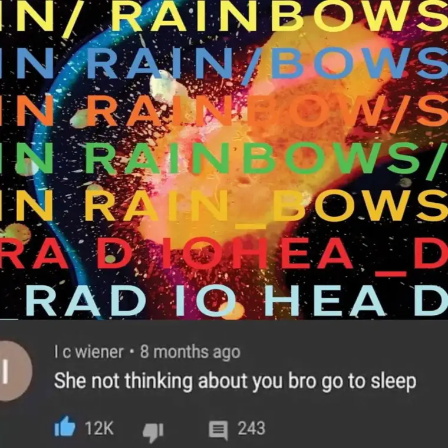
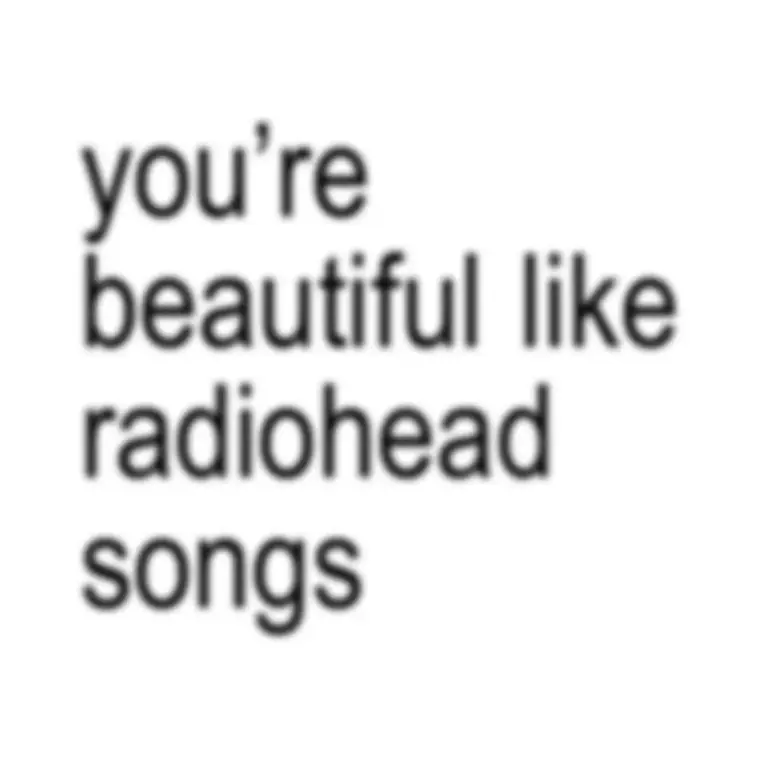
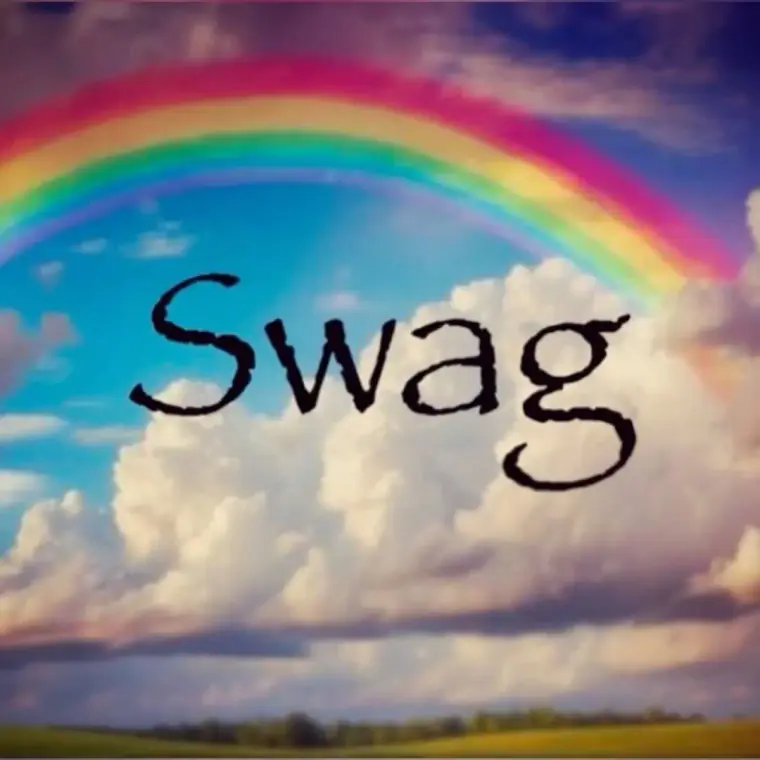
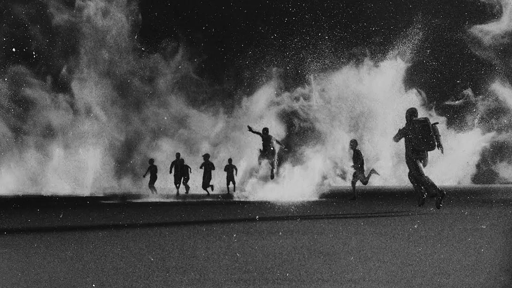
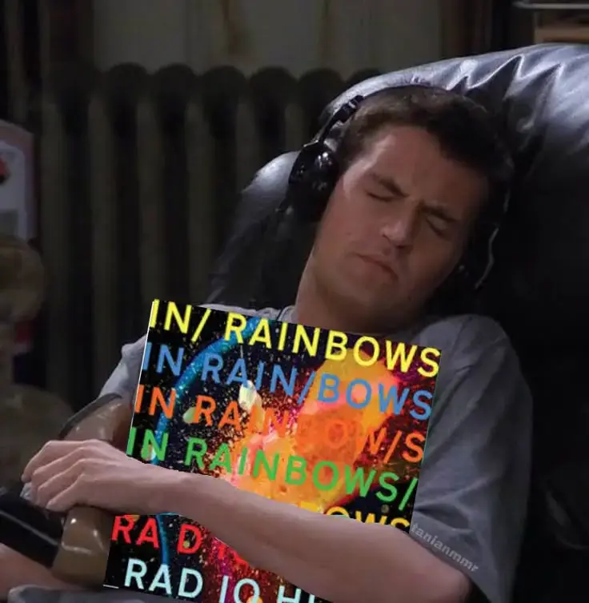
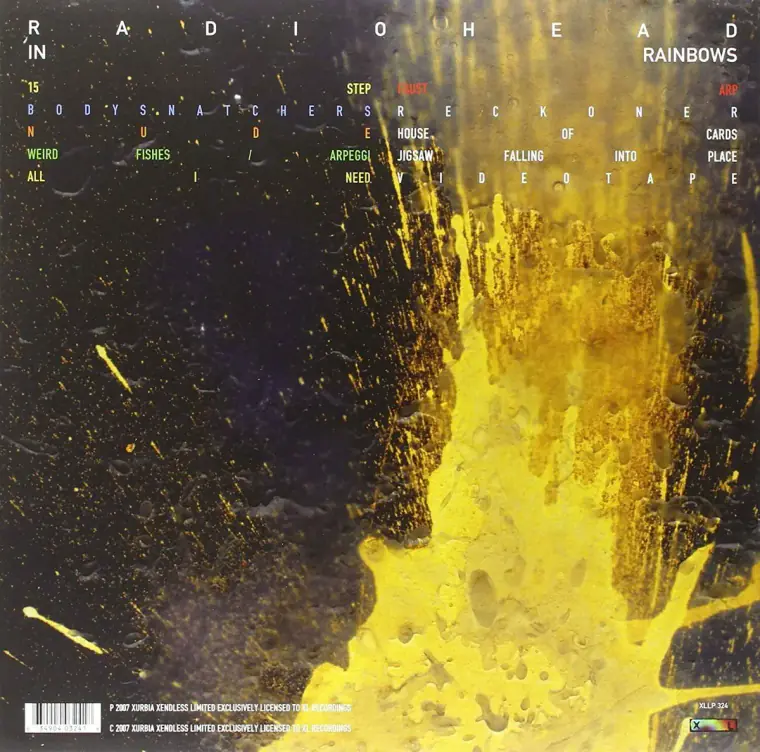
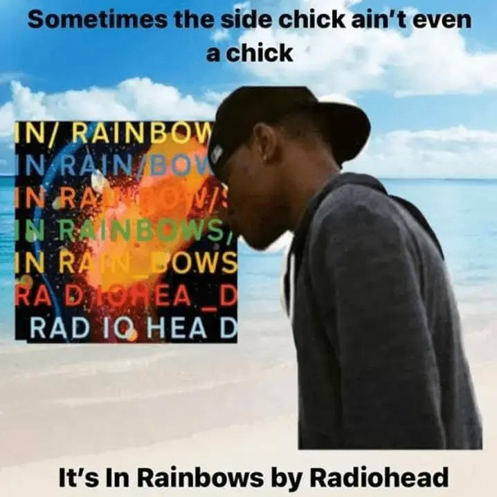
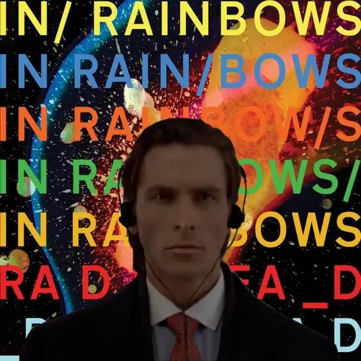

Journal / 29 de noviembre de 2025
BoJack & In Rainbows
El asombro de perderse en la música y el tesoro de una primera experiencia. Y qué gran experiencia— y mejor álbum.




IN RAINBOWS — LA RESONANCIA DE ESTAR VIVO.
Hay una cualidad casi mística en el hecho de sentirse vivo, y casi siempre se esconde en las cosas que no podemos retener. Se parece mucho a la primera vez que uno escucha In Rainbows: una explosión de colores que atraviesan una habitación vacía. Es el momento en que comprendes que la luz solo brilla con esa intensidad porque antes habitabas en la sombra.
Este álbum fue mi pulso el año pasado. Fue el escenario de mi antigua ilusión, esa banda sonora que se fundió con los restos de una esperanza que hoy ya solo vive en la memoria. Pero lo hermoso de la música —y de la vida— es que tiene la capacidad de nacer de nuevo en los oídos de otro. Recomendarle este disco a un amigo y ver cómo esos arpegios le elevaban y le dejaban caer con la delicadeza de una hoja, fue volver a sentir mi propio latido desde fuera. Fue ver cómo algo que un día me rompió, ahora servía para que otro pudiera soñar.
Estar vivo no es solo alcanzar la paz; es ser capaz de vibrar entre las notas del caos.
Es esa extraña y cálida desesperación de All I Need. Es la transparencia absoluta de Nude. Pero como dicen los Peces Raros: la certeza de que el "fondo" es el único sitio donde dejamos de luchar contra la marea y empezamos, por fin, a ser parte de la corriente.
A veces buscamos grandes hitos para sentir que nuestra existencia tiene sentido, pero este disco me recordó que el verdadero paraíso es lo mundano: una voz amiga, el asombro ante un acorde inesperado.
Al final, sentirnos vivos es darnos cuenta de que el arpegio sigue sonando. Mientras haya un residuo de música en el aire habrá un soplo de curiosidad en los pulmones.
— varix.
(Adrián)
Mi álbum más escuchado. El álbum de mi última ilusión. Poco más que decir.

Days ago I played for the first time In Rainbows by Radiohead and…
Now I finally understand the love people have it. I’m a casual Radiohead fan, but I had never played a full album before. This was actually my first one, and I can honestly say Weird Fishes / Arpeggi is one of the best songs I’ve ever heard.
There’s this phrase I’ve seen everywhere recently “get lost in the music” and I feel this album is the best experience of that. You get so lost that it takes you so far away or lifts you so high in its sounds but as soon as its finishing, it slowly brings you down like a leaf falling from a tree. And the song that explains all of this better for me is the one I mentioned before. I gotta play it again and focus more in the lyrics, and post about it again but wow it was beautiful.
I love doing these type of posts, it’s like me showing you my music journey playing classics that I’ve never before 🙂
Pd: shoutout to my homie Adri who made me play it! 🐐
By Urban
Continúa leyendo, o viendo, o escuchando...
Y sigue explorando en @weloveurban.



